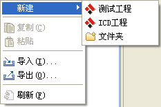
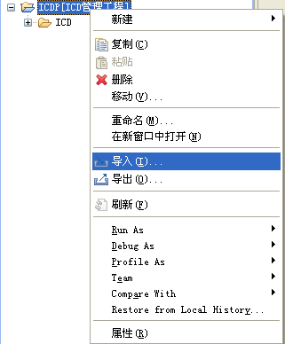

测试工程介绍
测试工程包含测试集合、测试用例以及测试结果。用户可以对测试工程进行导入、导出、删除操作。创建测试工程
-
将鼠标移动到测试工程视图上，然后点击鼠标邮件，从菜单上选择新建->测试工程
如下图所示
 -
在弹出到对话框中（如下图所示）输入项目名称也可以选择工程存储的路径，默认情况下工程是存储在当前的工作空间下，建议用户使用缺省位置。
-
点击Finish按钮之后，系统会在工程视图中创建一个以用户刚刚输入的工程名字为展示名的测试工程。如下图所示
导入测试工程
导入ICD工程
-
在工程视图上点击鼠标邮件，从弹出的菜单中选择导入，如下图所示

-
从弹出的对话狂中选择常规->导入外部工程，如下图所示

-
点击Next按钮，弹出导入对话框，选择浏览(R)按钮，从弹出的文件对话框中选择需要导入的测试工程，然后点击Finish按钮，如下图所示
注意：在导入测试工程之后，如果导入的工程当中所包含的测试用例所引用的ICD文件在当前工作空间中不存在，则会利用错误图片的形式提醒用户，如果ICD文件已经被修改了，则会使用警告图片来提示用户，并会在问题视图中显示相应的信息
删除测试工程
在测试工程上点击鼠标右键，从弹出的菜单中选中删除菜单， 系统会弹出一个对话框询问用户是否删除，如果用户选中是则删除 工程，否则将不执行任何操作。
注意：当用户删除了工程之后，与工程中所包含的测试用例有关的所有执行结果数据也会被删除。